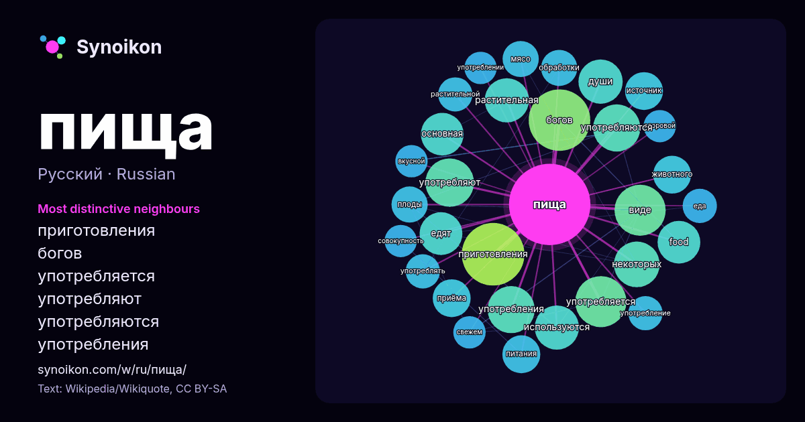

Русский · популярное слово
пища
“food” · Слова вокруг него в 954 вхождениях из Википедии, Wikiquote.

Самые характерные соседи
- приготовления 29×
- богов 28×
- употребляется 20×
- употребляют 19×
- употребляются 18×
- употребления 17×
- растительная 16×
- food 15×
- едят 15×
- души 14×
- используются 11×
- основная 11×
- животного 11×
- приёма 11×
- мясо 10×
- виде 10×
- плоды 10×
- источник 10×
- питания 10×
- растительной 9.9×
× = во сколько раз чаще, чем в обычном тексте Википедии.
Самые частые соседи
- приготовления 30
- богов 29
- виде 20
- употребляется 20
- употребляют 18
- употребления 17
- употребляются 17
- некоторых 16
- является 16
- души 15
- используются 15
- растительная 15
- food 14
- едят 14
- основная 14
- человека 14
- животного 11
- источник 11
- которую 11
- питания 11
В контексте
- деятельности, связанная с приготовлением пищи, называется «кулинария» (кухонное ремесло). Безопасная пища — это пища, которая свободна не только от токсинов Wikipedia snippets · Пища
- ссылки на авторитетные источники в виде сносок. (29 июля 2024) По́стная пи́ща — пища, разрешённая к употреблению во время христианских религиозных постов[источник Wikipedia snippets · Постная пища
- Пища богов: Пища богов — возвышенно-поэтическое название амброзии Литература «Пища богов» (англ. The Food of the Gods and How It Came to Earth) (1904) Wikipedia snippets · Пища богов
- Пища: Пища — совокупность веществ, используемых для питания. Пища — село на Украине. Пищевкус Примечания Список значений слова или словосочетания со ссылками Wikipedia snippets · Пища (значения)
- «Пища ангелов», или ангельский бисквит (англ. angel food cake, angel cake), — разновидность бисквита из яичных белков, муки и сахара; в отличие от других Wikipedia snippets · Пища ангелов
- Запре́тная пи́ща — пища, которую некоторые люди не имеют право принимать по религиозным правилам, культурным устоям либо гигиеническим соображениям. Большинство Wikipedia snippets · Запретная пища
- употреблению. В известном словаре В. И. Даля, Блю́до — приспешное яство, кушанье; пища, подаваемая на стол. Как правило подразделяются на первые блюда (щи, солянки Wikipedia snippets · Блюдо (пища)
- обоснование законов кашрута. Еврейские законоучители также объясняют, что трефная пища отрицательно влияет на духовный уровень человека, его духовная чувствительность Wikipedia snippets · Кашрут
Другие слова
- бог
- власть
- вода
- деньги
- жизнь
- здоровье
- золото
- искусство
- истина
- история
- климат
- кошка
- мост
- наука
- поезд
- природа
- работа
- семья
- сердце
- смерть
- собака
- язык
Предварительно рассчитано 2026-10-09 с настройками по умолчанию (±5 слов, средний корпус). Интерактивная карта может обновить данные в реальном времени.
Интерфейс переведён машинно; исправления приветствуются.